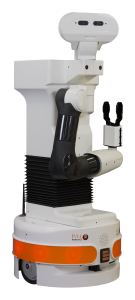
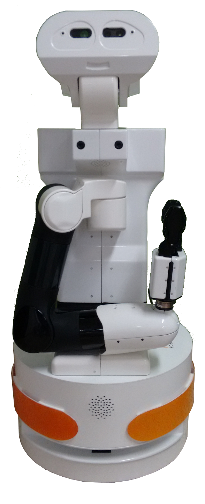

<!DOCTYPE html>
<html>
    <head>
        <title>Pilot study</title>
        <script src="src/jspsych-6.1.0/jspsych.js"></script>
        <script src="src/jspsych-6.1.0/plugins/jspsych-fullscreen.js"></script>
        <script src="src/jspsych-6.1.0/plugins/jspsych-survey-html-form.js"></script>
        <script src="src/jspsych-6.1.0/plugins/jspsych-video-keyboard-response.js"></script>
        <script src="src/jspsych-6.1.0/plugins/jspsych-survey-text.js"></script>
        <script src="src/jspsych-6.1.0/plugins/jspsych-html-keyboard-response.js"></script>
        <link href="src/jspsych-6.1.0/css/jspsych.css" rel="stylesheet" type="text/css"></link>
    </head>
    <body></body>
    <script>

    /*****************************************************/
		function beginExperiment(timeline, condition){
			timeline.push({
			  type: 'fullscreen',
			  fullscreen_mode: true
			});

		    /* define welcome message trial */
	    var welcome = {
	      type: "html-keyboard-response",
	      stimulus: "Welcome to the experiment. Press any key to begin."
	    };
	    timeline.push(welcome);

		  var instructionsA0 = {
			  type: "html-keyboard-response",
			  stimulus: "" +
                  "" +
                  "<p>In this experiment, videos <strong>recorded with this robot</strong> will be played.</p>"+
                  "<p>Press any key to continue.</p>"
			};

      var instructionsA1 = {
			  type: "html-keyboard-response",
			  stimulus: "<p>Questions about your <strong>understanding of the scene</strong>, <strong>what this robot should do</strong>, and <strong>why</strong> will be asked.</p>" +
			            "<p>Press any key to start the tutorial.</p>"
			};

      var instructionsB0 = {
			  type: "html-keyboard-response",
			  stimulus: "<p>In this experiment, videos will be played.</p>"+
                  "<p>Press any key to continue.</p>"
			};

      var instructionsB1 = {
			  type: "html-keyboard-response",
			  stimulus: "<p>Questions about your <strong>understanding of the scene</strong>, <strong>what you should do</strong>, and <strong>why</strong> will be asked.</p>" +
			            "<p>Press any key to start the tutorial.</p>"
			};

			if(condition=='conditionA'){
				timeline.push(instructionsA0);
        timeline.push(instructionsA1);
      } else if(condition=='conditionB'){
        timeline.push(instructionsB0);
        timeline.push(instructionsB1);
      }
		}

    function addTutorial(timeline, condition){

    }

    /*****************************************************/
		function endExperiment(timeline){
			var finish = {
		      type: "html-keyboard-response",
		      stimulus: "<p>Many thanks for your participation.</p>" +
		      			"<p>Press any key to exit.</p>"
		    };
		  timeline.push(finish);
			timeline.push({
			  type: 'fullscreen',
			  fullscreen_mode: false
			});
		}

    /*****************************************************/
		function addQuestions(timeline, condition, vid_idx, seq_idx){
			var video_path;
			if (seq_idx < 0)
			{
				video_path = 'videos/video-'+vid_idx.toString()+'.jpg';
			}
			else
			{
				video_path = 'videos/video-'+vid_idx.toString()+'-'+seq_idx.toString()+'.jpg';
			}

	      //
	      	if(condition_assignment=='conditionA')
	      	{
	      		var form_trial = {
						          type: 'survey-html-form',
						          preamble: '<p></p>',
						          html: '<p> What is the goal of the person in the video? <input name="goal" type="text" /></p>'
						                + '<p> Should the robot take any action at this point? If so, what? <input name="action" type="text" /></p>'
						                + '<p> Can you explain what made you suggest this action (or lack of action)? <input name="why" type="text" /></p>'
	        					 };
	      	}
	      	else
	      	{
	      		var form_trial = {
						          type: 'survey-html-form',
						          preamble: '<p></p>',
						          html: '<p> What is the goal of the person in the video? <input name="goal" type="text" /></p>'
						                + '<p> Would a person take any action at this point? If so, what? <input name="action" type="text" /></p>'
						                + '<p> Can you explain what made you suggest this action (or lack of action)? <input name="why" type="text" /></p>'
	        					 };
	      	}        

	        timeline.push(form_trial);
		}

    /*****************************************************/
    function addVideoTrial(timeline, condition, video_indice, nb_waypoint){
			if(nb_waypoint == 0)
			{
				var trial = {
			    type: 'video-keyboard-response',
			    sources: [
			        'videos/video-'+video_indice.toString()+'.mp4'
			    ],
			    response_ends_trial: true,
			    choices: jsPsych.NO_KEYS,
			    trial_ends_after_video: true,
			    width: 640
				}
				timeline.push(trial);
				addQuestions(timeline, condition, video_indice, -1);
			} else {
				for (var i=0; i<nb_waypoint; i++)
				{
					var trial = {
				    type: 'video-keyboard-response',
				    sources: [
				        'videos/video-'+video_indice.toString()+'-'+i.toString()+'.mp4'
				    ],
				    response_ends_trial: true,
				    choices: jsPsych.NO_KEYS,
				    trial_ends_after_video: true,
				    width: 640
					};
					timeline.push(trial);
					addQuestions(timeline, condition, video_indice, i);
				}
      }
		}

    /*****************************************************/
	  function saveData(name, data){
		  var xhr = new XMLHttpRequest();
		  xhr.open('POST', 'write_data.php'); // 'write_data.php' is the path to the php file described above.
		  xhr.setRequestHeader('Content-Type', 'application/json');
		  xhr.send(JSON.stringify({filename: name, filedata: data}));
		}

		/*****************************************************/
		/* MAIN PROGRAM 									                   */
		/*****************************************************/

		/* create timeline */
	  var my_timeline = [];

	  // generate a random subject ID with 128 characters
		var subject_id = jsPsych.randomization.randomID(128);

		// pick a random condition for the subject at the start of the experiment
		var condition_assignment = jsPsych.randomization.sampleWithoutReplacement(['conditionA', 'conditionB'], 1)[0];

		var video_indices = [0];
	  	var video_waypoints = [3];
    	var nb_max_trial = 10;
		var shuffled_video_indices = jsPsych.randomization.shuffleNoRepeats(video_indices);

		jsPsych.data.addProperties({
		  subject: subject_id,
		  condition: condition_assignment,
		  video_order: shuffled_video_indices
		});

		beginExperiment(my_timeline, condition_assignment);

		for (var i=0; i<shuffled_video_indices.length || i>nb_max_trial; i++)
		{
			addVideoTrial(my_timeline, condition_assignment, shuffled_video_indices[i], video_waypoints[shuffled_video_indices[i]]);
		}

		endExperiment(my_timeline);

    /* start the experiment */
    jsPsych.init({
    	timeline: my_timeline,
    	on_finish: function() { jsPsych.data.displayData(); }
    });

    </script>
</html>
